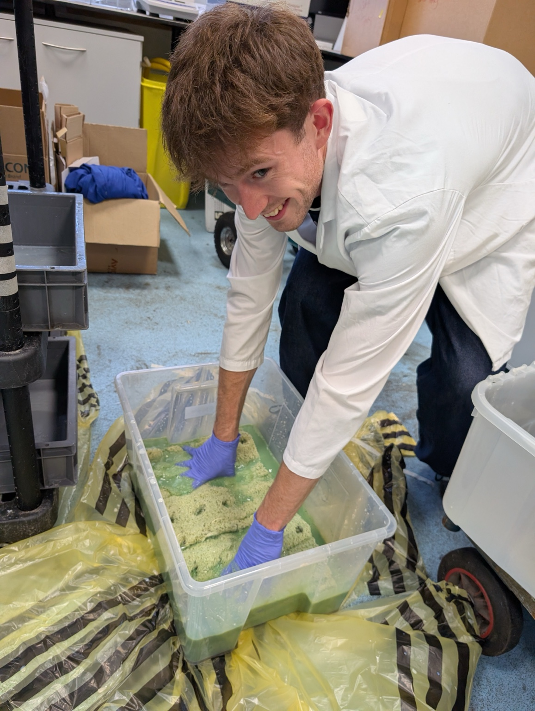
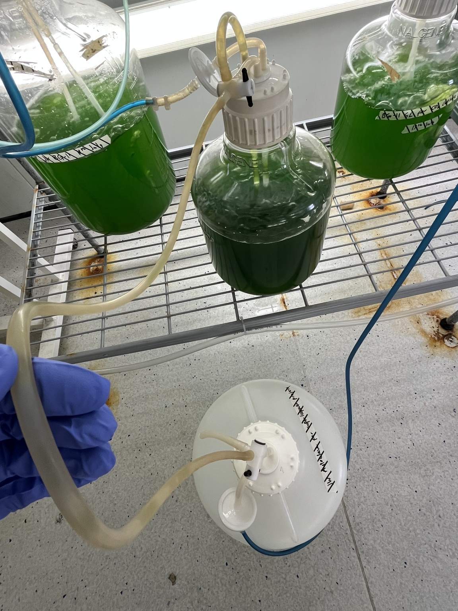
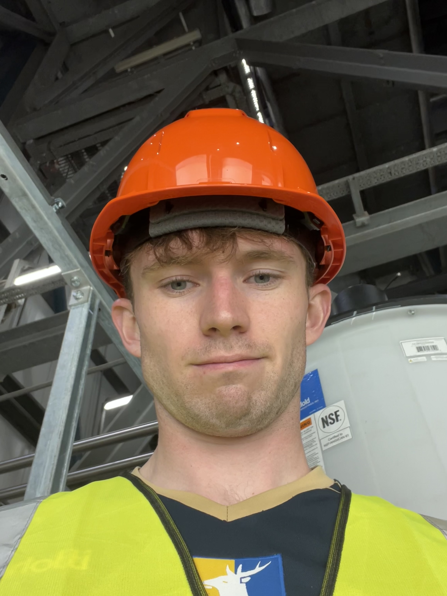

From the lab to process design
Engineering projects
The work that has helped me develop as a chemical engineer.
During my BEng and MSc at Newcastle University, I explored wastewater treatment, industrial decarbonisation and energy storage. These summaries explain what I worked on, the skills I developed and the questions I’m still interested in.
MSc dissertation · Water & biotechnology
Microalgae for wastewater treatment
Research in collaboration with Northumbrian Water.
My dissertation investigated immobilised microalgae biocomposites for nutrient removal from treated wastewater. The practical work combined algae cultivation, preparation of loofah-supported biocomposites and the setup of a pilot reactor.
My practical work
I spent the summer cultivating Chlorella vulgaris, preparing BG-11 growth media and stock solutions, transferring cultures into autoclaved containers, and coating loofah to prepare biocomposites. My site work included reactor cleaning, recommissioning and flow balancing for wastewater trials.
I also gained experience using LCK cuvette test kits to measure nutrients in water samples. Comparing samples helped me assess nutrient-removal performance, while recognising the importance of controls and variation in wastewater conditions.
Skills I developed
- Preparation of growth media and stock solutions, accurate measurement and careful culture handling.
- Algae cultivation, culture transfer and preparation of loofah-supported biocomposites.
- Reactor cleaning, recommissioning, flow balancing and practical troubleshooting.
- Nutrient testing with LCK cuvette kits and comparison of water samples.
- Experimental planning, control selection and interpreting variable wastewater data.
- Working with an industrial partner and communicating practical requirements.
What I took from it
This project helped me understand how much depends on the practical details: preparing consistent supports, keeping cultures healthy, organising sampling and recognising the limits of the evidence. It strengthened my interest in water and wastewater engineering.
Published background: In-na and colleagues (2020), including Gary Caldwell and Jonathan Lee: loofah-based microalgae and cyanobacteria biocomposites for carbon dioxide capture.
See my planned microalgae articleMy practical experience
From growing cultures to preparing materials




MSc advanced design project
Biomass pyrolysis & cement decarbonisation
Connecting process design with environmental and economic assessment.
This design project explored converting sawdust into biochar, bio-oil and syngas, and integrating those products with cement production. The proposed process combined drying, an auger pyrolysis reactor and product recovery.
What the work involved
I worked on mass and energy balances, drying and heat integration, the use of syngas for process heat, and the potential use of biochar and bio-oil within cement production. The assessment also considered costs, emissions, safety and the wider sustainability implications.
Skills I developed
- Linking process units through mass and energy balances.
- Assessing heat demand, fuel use and integration opportunities.
- Techno-economic modelling and exploring sensitivity to assumptions.
- Considering environmental, social and safety factors alongside technical performance.
The project encouraged me to consider the whole system: a useful product or lower heat demand only becomes a convincing solution when the economics, safety and integration also work.
See my planned cement articleBEng design project
Post-combustion carbon capture
Developing a foundation in process design and safety.
My undergraduate project covered a post-combustion carbon capture process, including absorption, solvent regeneration and CO₂ compression.
Skills I developed
- Understanding the roles of absorption, stripping and compression.
- Preparing process design documentation and considering material selection.
- HAZOP and identifying process hazards.
- Cost estimation and considering the energy demands of capture.
This work gave me an interest in where carbon capture can make a useful contribution, and how its energy demand and infrastructure needs affect that decision.
See my planned carbon capture articleMSc electrochemical assignment
Hydrogen storage for community energy
Exploring an option for storing energy for later use.
In an electrochemical assignment, I explored hydrogen storage as a potential future energy solution for small communities near suitable storage infrastructure.
The question that interests me
Could locally available renewable electricity be converted into hydrogen, stored and used when energy is needed? I’m interested in how the answer changes with storage geology, access to infrastructure, conversion losses and community demand.
The suitability of underground storage is specific to each site. Saline aquifers and salt caverns are different storage environments, with different technical considerations; proximity alone does not establish feasibility.
Further reading: US Department of Energy overview of underground hydrogen storage.
Continuing to learn
More work to share
I’ll continue expanding this page with project photographs and examples of my work as I develop the website. Alongside my job and fundraising, I want to keep learning new skills and exploring the engineering behind the environmental issues that matter to me.
Browse my independent research